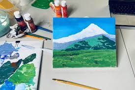
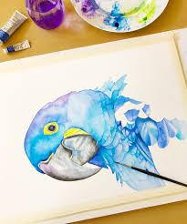
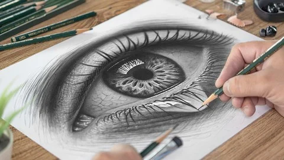

Traditional art is a form of art where you draw on paper/canvas or create something physically
Traditional art has many different forms. Anything created physically is art. But the most commonly seen and known ones are painting, watercolour, and sketching. Painting has many types, theres oil paining, acrylic painting, and so much more. It is when you use paint on a canvas, and can take a lot of time, sometimes up to years if it's incredibly detailed on a big canvas! Watercolour is also similar to painting, except it's not paint. You mix water with a pigment that activates with water, which then gives you something to paint with. It is a more transparent type of paint, and is very delicate work. Sketching is created with regular pencils, it is black and white. It's usually realistic and very detailed. There are different pencil sizes for it, such as HB, 2B, 3B, and so on, the larger the number, the more pigmented and thick it is.
| Painting | Watercolour | Sketching |
|---|---|---|
 |
 |
 |